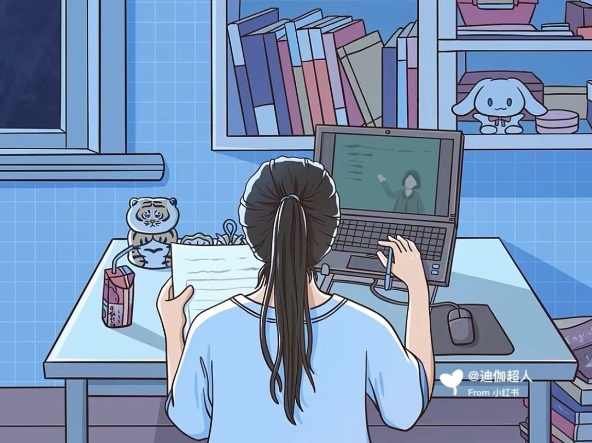
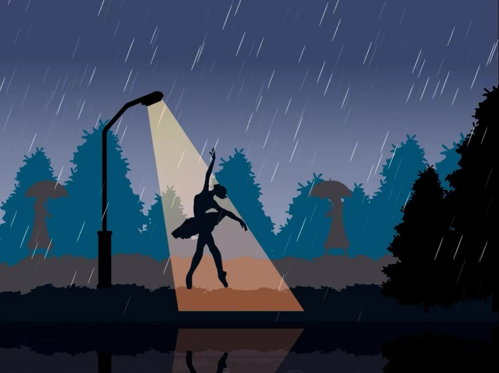
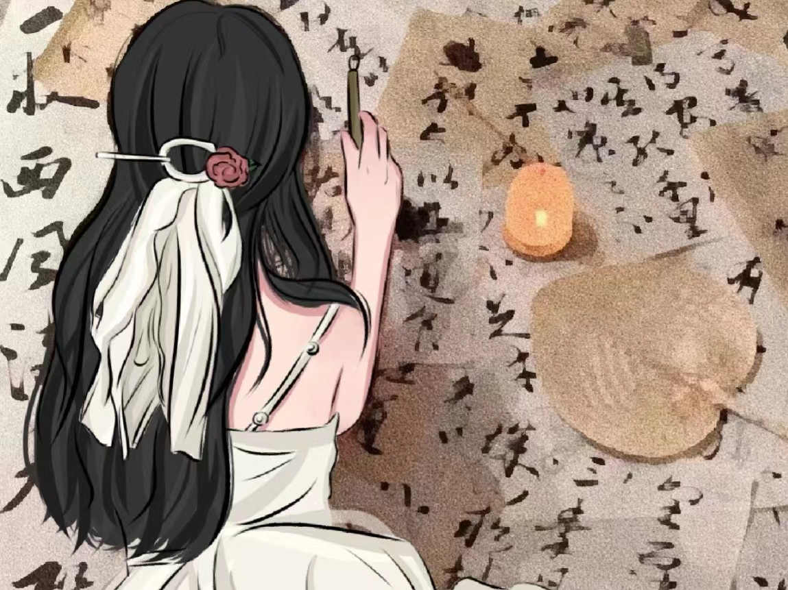
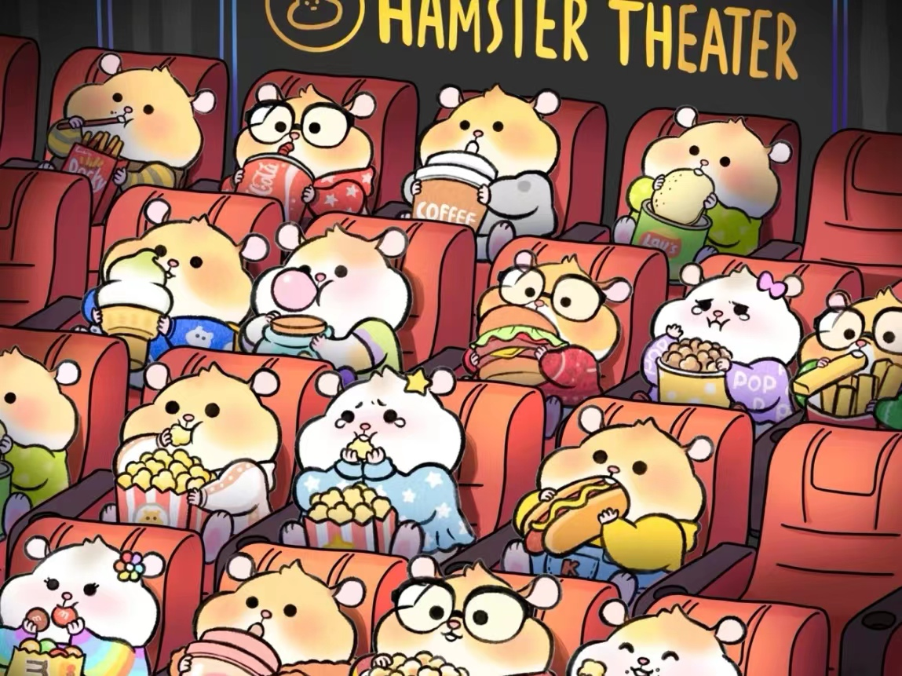
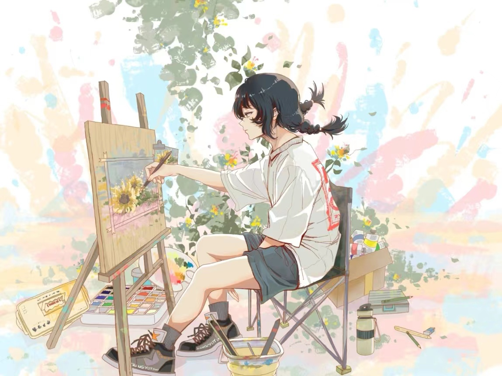
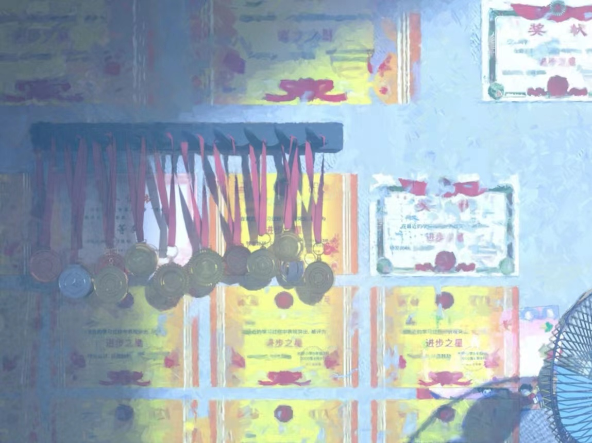

Me and "Artificial Intelligence":
I chose to study Artificial Intelligence in university because of its vast potential to impact our daily lives in profound ways. From automated systems in transportation and manufacturing to virtual assistants in our homes and on our phones, AI is becoming increasingly integrated into our daily routines.
Moreover, as someone who has always been fascinated by the intersection of technology and society, I believe that AI has the potential to address some of the most pressing challenges facing humanity today. From climate change to healthcare, AI has the potential to revolutionize the way we approach these complex issues and find solutions that were previously impossible.
Furthermore, the job market for AI professionals is rapidly expanding, with companies across industries seeking individuals with a strong understanding of machine learning, data analysis, and algorithm development. By studying AI, I hope to gain the skills and knowledge necessary to be at the forefront of this exciting and rapidly evolving field.
In short, my decision to study AI was motivated by my passion for technology, my desire to make a positive impact on society, and the exciting career opportunities that this field presents.
Major courses taken so far:
Fundamentals of Python Programming, Introduction to Computer Science and Technology
Object-oriented Programming, Introduction to Software Engineering, Data Structures and Algorithms
Computer Architecture, JAVA language programming, Web application development
Operating system principle, Database system principle, etc

Leisure time:
In my spare time, one of my hobbies is going dancing. Dancing is
an activity that brings me joy and helps me stay active and
healthy. When I dance, I feel free and alive, and I get lost in
the rhythm and the movement. It's a great way for me to express
myself and release any stress or tension I may be feeling. Dancing
is also a full-body workout that helps me stay in shape and
maintain my physical health. I enjoy trying out different types of
dance styles, from salsa to hip hop to ballet. Each dance style
has its unique challenges and benefits, and I love the feeling of
learning something new and mastering a new skill.

In my spare time, one of my favorite hobbies is practicing
calligraphy. I have been learning calligraphy for several years
now, and it has become a passion of mine. Through practicing
calligraphy, I have developed a deeper appreciation for the art of
handwriting. The careful attention to detail and precision
required to create beautiful lettering and designs have taught me
patience and perseverance. In a world where everything seems to
move so fast, calligraphy has become my refuge, a place where I
can slow down and focus on the beauty of the written word. I enjoy
trying out different calligraphy styles, from traditional Chinese
brush calligraphy to modern calligraphy with a pointed pen. Each
style presents its unique challenges and opportunities for
creativity, and I love exploring new techniques and experimenting
with different ink colors and paper textures.

On weekends, one of my favorite hobbies is going to the movies. I
love to immerse myself in a good film and escape into another
world for a few hours. Comedy movies are my favorite genre, as I
enjoy laughing and feeling uplifted after a long week. Going to
the movies is a great way to relax and unwind after a busy week. I
enjoy the entire movie-watching experience, from buying my ticket
and popcorn to finding the perfect seat in the theater. The
darkness of the cinema and the surround sound make me feel like
I'm a part of the story, and I often find myself getting lost in
the plot and characters. I especially enjoy watching comedy movies
because they make me laugh and feel happy. Laughter is a powerful
medicine that can lift my mood and reduce stress, and I always
leave the theater feeling refreshed and rejuvenated.

In my spare time, one of my hobbies is drawing, although I
wouldn't say that I'm particularly good at it. Despite my lack of
skill, I find drawing to be a relaxing and enjoyable activity that
allows me to express my creativity. Even though my drawings may
not be perfect, I still find the process of creating something
with my own hands to be incredibly satisfying. Drawing allows me
to focus my mind and escape into a world of my own making. It's a
great way for me to unwind after a long day and forget about the
stresses of life for a little while. While I may not have the
natural talent of a professional artist, I still enjoy
experimenting with different techniques and styles. I love trying
out new materials and tools, such as pencils, charcoal, and
pastels, and seeing what kinds of effects I can create.

During the winter and summer breaks, one of my favorite hobbies is
traveling with my family. Exploring new places and experiencing
different cultures is an incredibly rewarding experience, and it's
something that we all look forward to every year. Traveling with
family is a great way for us to bond and create lasting memories
together. We enjoy planning our trips together and deciding on the
places that we want to visit. Whether we're exploring historic
landmarks or simply soaking up the local culture, we always have a
great time together. One of the things that I love most about
traveling is the opportunity to try new foods and cuisines.
Sampling the local cuisine is a great way to experience the
culture of a place and expand our taste buds. From street food to
fine dining, we always make it a point to try out the local
specialties and indulge in new flavors and spices.
Achievement:
· CET4 CET6 (College English Test)
· The Twelfth APMCM Second Prize
· 2021 SCNU Campus Dance Competition Excellence Award
· 2023 SCNU Campus Calligraphy Competition Third Prize
· 2021 SCNU Sunshine Sports Activity Basketball League Third Prize
· The Fourteenth Blue Bridge Cup Provincial First Prize
· Putonghua Level II, Grade A